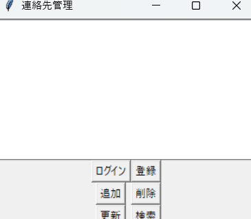
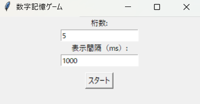

自己紹介
TypeScriptとPythonを中心に、バックエンド開発のスキルを伸ばしている学生エンジニアです。現在はNestJSやSQLiteなどを活用したAPI関係の勉強に注力しています。また、最近では資格の勉強にも力を入れており、AWS検定やLinucやなど様々な資格の勉強をしております。
Skills
- TypeScript
- JavaScript
- NestJS
- Python
- Django
- tkinter
- C#
- SQLite
- MySQL
- HTML/CSS
- Git/GitHub
- Unity
取得している資格及び取得予定の資格
- AWS検定
- 基本情報処理技術者試験
- Linuc
- Python検定
- Java検定
Projects


GUI Gmail送信ツール（Tkinter版）
使用技術: Python / tkinter
GUIで複数宛先へ送信できるメール送信ツール。ユーザーインターフェース改善に注力。


QRコード複数作成ツール
使用技術: Python / Tkinter
好きな文字列を入力してQRコードを生成できるツール。複数のQRコードを一括で作成可能。保存先ディレクトリも指定可能。


Localサーバーを立てたじゃんけん対戦ゲーム
使用技術: Python / Tkinter
Localサーバーを立てて、CPUや他プレイヤーと接続してじゃんけんして遊ぶゲーム、継続や収量も可能。結果表示も可能です。

Contact
メール: example@example.com
Twitter: @yourhandle